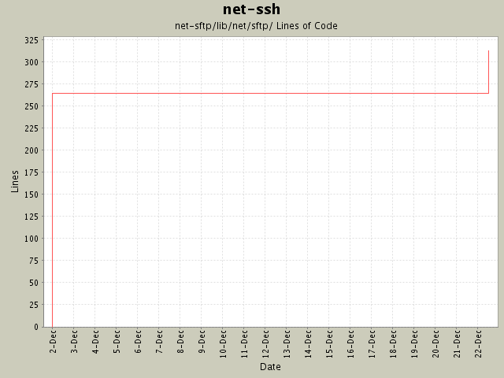

Summary Period: 2004-12-01 to 2004-12-22
[root]/net-sftp/lib/net/sftp
 operations
(19 files, 850 lines)
operations
(19 files, 850 lines)
 protocol
(4 files, 431 lines)
protocol
(4 files, 431 lines)
 01
(4 files, 526 lines)
01
(4 files, 526 lines)
 02
(3 files, 115 lines)
02
(3 files, 115 lines)
 03
(3 files, 121 lines)
03
(3 files, 121 lines)
 04
(4 files, 456 lines)
04
(4 files, 456 lines)
 05
(1 files, 44 lines)
05
(1 files, 44 lines)

Total Lines Of Code:
313 (2005-01-07 15:12)
| Author | Changes | Lines of Code | Lines per Change |
|---|---|---|---|
| minam | 7 (100.0%) | 316 (100.0%) | 45.1 |
Added open_handle, get_file, and put_file methods. Bumped version to 0.9.
49 lines of code changed in:
Fixed some doc typos. Made the synchronous operations work in Ruby 1.8.1
(they no longer require a 'return' from within a proc).
2 lines of code changed in:
Initial revision
265 lines of code changed in:
Generated by StatCVS 0.2.3